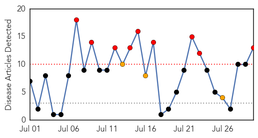

Chikungunya
30-Day Web Trend
2 alerts, 0 warnings
30-Day Twitter Trend
1 alerts, 0 warnings
Article Locations

Article Confidences

Top Articles:
-
No articles found for Jul 30, 2015
Top Tweets:
-
No tweets found for Jul 30, 2015
West Nile Virus
30-Day Web Trend
9 alerts, 3 warnings

30-Day Twitter Trend
3 alerts, 0 warnings

Article Locations

Article Confidences

Top Articles:
- 0.994
- West Nile Virus Case Confirmed In Volusia
- 0.990
- Threat of West Nile outbreak still present even during drought
- 0.980
- Idaho reports 1st human West Nile virus case in Washington County
- 0.975
- Health officials urge residents to protect against West Nile...
- 0.964
- West Nile virus infection of a human is confirmed in southwest Idaho
- 0.944
- Fourth Central IL County to Test Positive for West Nile
- 0.943
- Mosquitoes in Sugar Land test positive for West Nile virus
- 0.875
- Official: Mosquito-borne diseases could hit state 'any time now'
- 0.809
- Boise, Meridian, Nampa, Caldwell, Idaho News, Weather, Sports and Breaking News - KBOI 2
- 0.729
- West Nile virus detected in Kent County mosquito traps
- 0.723
- Ohio has big mosquito problem
- 0.716
- Two West Nile Cases In Ohio
- 0.642
- Archives > News > Mosquitoes sprayed in western Elk Grove
Top Tweets:
-
No tweets found for Jul 30, 2015